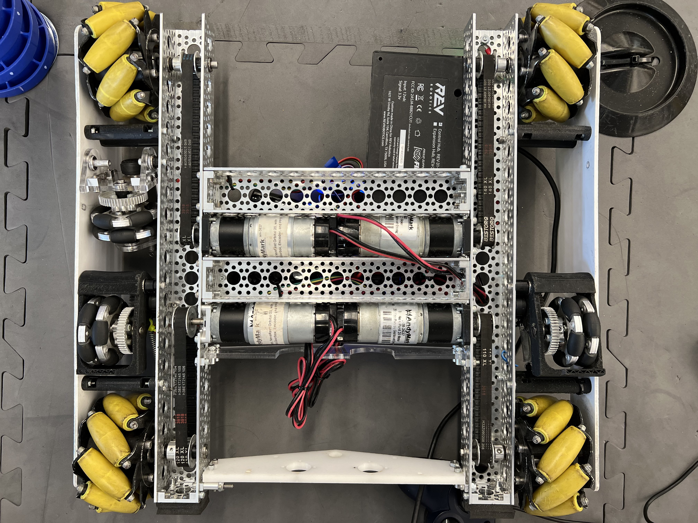
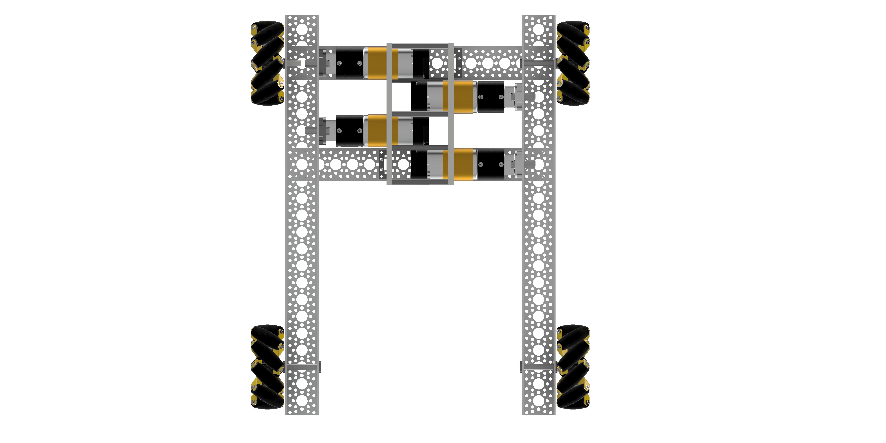
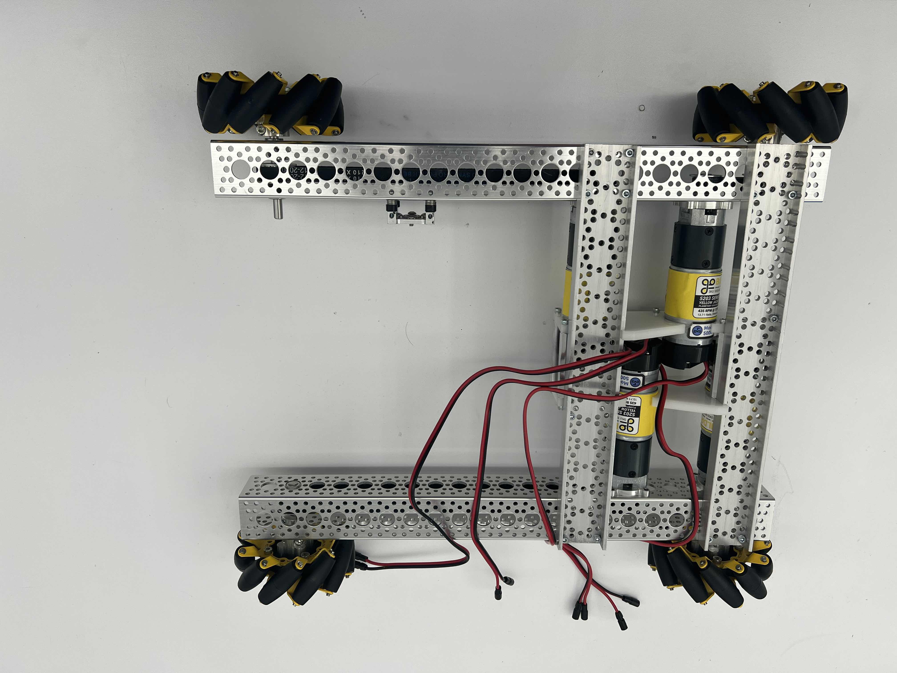

Last year, our team was known as 7405X Millburn Robotics.
We were competing in the experimental VEX AI competition.
The competition required the robots to be fully autonomous,
and was played on the same field as the VEX Robotics Competition.
More information about our team's history can be found on our website for last year:
https://millburnai.org/
Conceptualizing the Drive

This is the remaining drive from our Skystone robot.
The old lift mechanism sat in between two plastic plates, doubling as structural support.
The motors in the middle helped balance wieght but became an issue when we wished to place
linear slides for this year's game, and encompass poles within the robot.
The existing odometry wheels made the Skystone drive a great fit for the code team to get a
head start.
The New Drive

Newer mecanum wheels allowed us to slim our bot down by a large margin. On top of that, we staggered the motors and placed them farther back. This allowed us to slim down our bot and to place our motors further towards the back. Although it may not balance well alone, we believe that this will sort itself out once we have the lift and claw mounted onto the bot.
This year, we took inspiration from the Skystone drive’s weaknesses. The motors had loosened due to their weight, so a custom bracket in the center supports the new drive’s motors. The connection between the motor bodies also helps increase the drive’s rigidity. Instead of connecting the U-channels from the center, taking word from 8405 alumni, our members CNC machined stronger and lower profile aluminum channels to take care of connecting the drive sides together. The result: a low profile, rigid drive with some kick in its motion.
